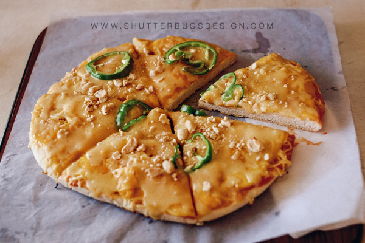
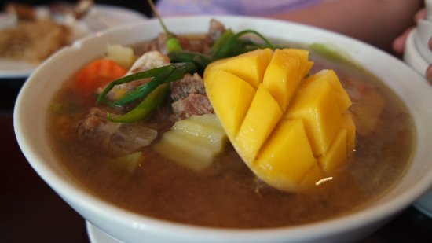
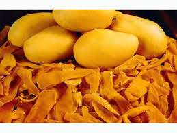
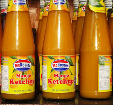
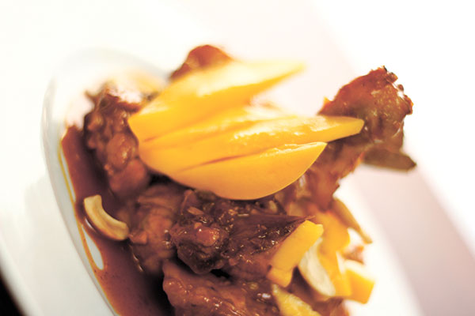
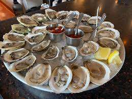
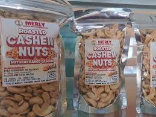

Taste Guimaras
Food & Delicacies
From mango-infused creations to fresh seafood — a culinary journey through the islands.
Culinary
Local Food & Delicacies
Guimaras cuisine is a celebration of its sweetest fruit and freshest seafood — a must-taste experience for every visitor.

Mango Pizza
Guimaras' most iconic dish — crispy pizza topped with fresh sweet Guimaras mango, melted cheese, and crushed cashews. The perfect sweet-savory creation.
The Pitstop Restaurant, Jordan

Mango Beef Bulalo
A creative Filipino twist on beef marrow soup, enriched with the natural sweetness of Guimaras mango for a uniquely rich and flavorful broth.
The Pitstop Restaurant, Jordan

Talaba (Fresh Oysters)
Guimaras is celebrated for its plump, fresh oysters — enjoyed raw, charcoal-grilled, or cooked in garlic butter straight from coastal beds.
Coastal barangays of Buenavista & Jordan

Pitaw (Sea Urchin)
A prized local delicacy — creamy, briny sea urchin enjoyed fresh or incorporated into pasta and ceviche. A true ocean-to-table Guimaras experience.
Nueva Valencia coastal communities

Binakol Chicken Soup
Native chicken cooked in fresh coconut water with young coconut meat, lemongrass, and ginger. Light, slightly sweet, and deeply comforting — a Visayan classic.
Local carinderias island-wide

Dried Mangoes
Chewy, intensely sweet strips of sun-dried Guimaras mango. The most popular take-home souvenir — available in various sizes at ports and pasalubong shops.
Pasalubong shops at Jordan & Buenavista ports

Trappist Mango Jam
Handcrafted mango and pineapple jams made by the monks of the Trappist Abbey. Produced in small batches — among the most sought-after products in Guimaras.
Trappist Abbey Gift Shop, Jordan

Adobong Pusit (Squid)
Tender squid cooked in a savory-tangy adobo sauce — a popular seafood staple in coastal Guimaras that pairs perfectly with steamed rice.
Seaside eateries across Guimaras

Chicken Adobo w/ Mango
The beloved Filipino adobo reinvented with ripe Guimaras mango — adding a fruity brightness to the traditionally savory dish.
Various restaurants island-wide
Mango-Dragon Fruit Halo-Halo
A refreshing tropical twist on the classic Filipino shaved ice dessert, featuring fresh Guimaras mango and dragon fruit with sweet toppings.
Local restaurants and snack shops

Fresh Seafood
Surrounded by the sea, Guimaras offers some of the freshest grilled fish, prawns, crabs, and shellfish cooked simply to let ocean flavors shine.
Seaside eateries in Buenavista & Nueva Valencia

Cashew Products
Locally grown cashews processed into roasted nuts, cashew brittles, and confections. Often paired with mango — a crunchy complement to the island's sweetest fruit.
Local markets & souvenir shops in Jordan